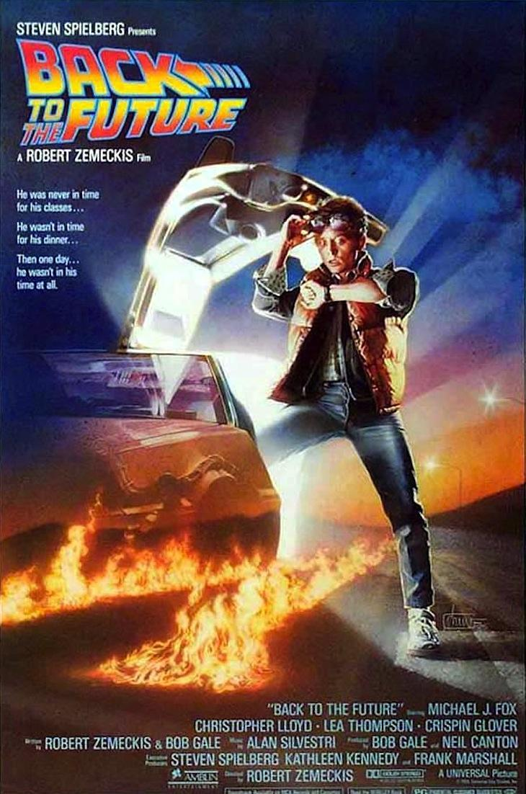

Llocs on veure la pel·lícula
| Cinema i plataformes | Preu | Valoració | ||
|---|---|---|---|---|
| Alquiler | Compra | |||
| Netflix | Subscripció | Subscripció | - | |
| Amazon Prime Video | 3,99€ | 7,99€ | 8,5 / 10 | |
| Movistar + | Subscripció | Subscripció | 4 / 5 | |
| Google Play Store | 3,99€ | 8,99€ | 4,7 / 5 | |
Back to the Future (titulada Retorn al futur).
Un petit resum: És una pel·lícula nord-americana de ciència ficció i
comèdia de 1985 dirigida i escrita per Robert Zemeckis, produïda per Steven Spielberg
i protagonitzada per Michael J. Fox, Christopher Lloyd, Lea Thompson,
Crispin Glover i Thomas F. Wilson.
Relata les aventures de Marty McFly, un adolescent rebel i impulsiu que viu amb els seus
pares i
viatja
accidentalment al passat des de 1985, la seva època, a 1955, l'època en què els seus pares es van
conèixer.
Eventualment, canvia els fets específics de la línia original de temps en què els seus pares es
van conèixer i enamorar. A causa d'això, Marty ha de recórrer a l'ajuda del Dr. Emmett Brown per
reunir als seus pares de nou, assegurant la seva pròpia existència i la dels seus germans.

Steven Allan Spielberg va neixer en Cincinnati, Ohio, el 18 de desembre de 1946. És un director, guionista i productor de cinema, dissenyador de videojocs i empresari de l'entreteniment estatunidenc. El Time el va classificar com a una de les 100 persones més importants del segle. En una carrera d'unes quatre dècades, les pel·lícules de Spielberg han tocat tota mena de temes i gèneres. Les primeres pel·lícules de ciència-ficció i aventures, de vegades molt dirigides al públic infantil, es van considerar com un arquetip de les superproduccions de Hollywood. Els anys següents les seves pel·lícules van començar a enfocar temes com l'Holocaust, l'esclavatge, la guerra i el terrorisme.

Marty McFly va néixer el 9 de juny de 1968, en Hill Valley. És el menor de tres germans. El seu millor amic és el científic Emmett Brown, a qui li diu col·loquialment "Doc". En la primera pel·lícula de la trilogia, hi ha una lleugera impressió que Marty està una mica avergonyit de la seva família i no passa molt temps a casa, preferint passar més moments amb Doc. Marty és un despreocupat adolescent la majoria de el temps. No és precisament el millor estudiant acadèmicament però les seves qualificacions són acceptables, també té la tendència d'arribar tard a l'escola. Toca la guitarra a The Pinheads i li agrada escoltar Rock & Roll, a més de ser un hàbil skateboarder. Quan es troba en perill, Marty mostra valentia i pot ser molt enginyós, astut i intel·ligent. El seu major defecte en el seu caràcter és la seva persistència en desitjar mostrar als altres que ell no és un covard, el que de vegades li causa riscos innecessaris. Tampoc pot suportar que li diguin "gallina".

Emmett Brown és un científic i el millor amic del protagonista de la sèrie, Marty McFly. Nascut en el fictici poble de Hill Valley, Califòrnia, el 1914, es defineix com "estudiant de totes les ciències" i passa gran part del seu temps inventant diversos artefactes, entre els quals destaca la màquina de el temps, construïda sobre la carrosseria d'un automòbil esportiu anomenat DeLorean. La gent d'Hill Valley ho veu com un estrany, un excèntric, i fins i tot com un boig, per això té pocs amics. Le gusta el jazz, las novelas de Julio Verne y las películas del oeste. No suele beber alcohol, ya que le afecta de forma desmedida, como se puede apreciar en Back to the Future Part III. Es alérgico a las fibras sintéticas.
George Douglas McFly va néixer l'1 d'abril de 1938. És el marit de Lorraine Baines, amb qui no té pràcticament cap relació, i el pare de Dave, Linda i Marty McFly. Lorraine és una dona alcohòlica, Dave treballa en una hamburgueseria i Linda és una adolescent que no aconsegueix trobar nuvi. El guió de Retorn a el futur descriu a George com "algú que va perdre en el joc de la vida".
Lorraine Baines McFly va néixer el 1938 a Hill Valley, Califòrnia. És esposa de George
McFly i
mare de Dave, Linda i Marty McFly.
És la filla gran de Sam (George DiCenzo) i Stella Baines(Frances Llegeix McCain), i la
germana
de Milton (Jason Hervey),
Sally (Jason Hervey), Toby i Joey.
Lorraine es va retratar inicialment en 1985 com una dona alcohòlica de mitjana edat i infeliç.
Després que
Marty canvia la línia de temps,
es mostra que està en forma i feliçment casada amb George el 1985. A la segona part encara està
feliçment
casada amb George el 2015, però en
la línia de temps distòpica alternativa de 1985 ella és vídua i està casada amb Biff.

Biff Tannen es un pinxo que té intimidat a George McFly, això seguirà 30 anys després on Biff és el seu supervisor encara que el seu amor per Lorraine mai es va donar ja que aquesta es va casar amb George. El 1955 fa servir una banda amb 3 amics: Skinhead, Match i 3D per intimidar George McFly, qui li fa els seus deures. És molt temut pels seus companys de curs. És menys valent quan està sense la seva banda i està enamorat de Lorraine Baines i en ocasions es refereix a ella com "la meva chicota", però Lorraine afirma ni que per un milió de dòlars seria la seva núvia.
| Cinema i plataformes | Preu | Valoració | ||
|---|---|---|---|---|
| Alquiler | Compra | |||
| Netflix | Subscripció | Subscripció | - | |
| Amazon Prime Video | 3,99€ | 7,99€ | 8,5 / 10 | |
| Movistar + | Subscripció | Subscripció | 4 / 5 | |
| Google Play Store | 3,99€ | 8,99€ | 4,7 / 5 | |

Trobarà més informació en els següents enllaços: